Model fitting 1: Only SSC and extended radio jet#
import warnings
warnings.filterwarnings('ignore')
import matplotlib.pylab as plt
import jetset
from jetset.test_data_helper import test_SEDs
from jetset.data_loader import ObsData,Data
from jetset.plot_sedfit import PlotSED
from jetset.test_data_helper import test_SEDs
print(jetset.__version__)
1.4.0rc0
test_SEDs
['/Users/orion/miniforge3/envs/py3.12/lib/python3.12/site-packages/jetset/test_data/SEDs_data/SED_3C345.ecsv',
'/Users/orion/miniforge3/envs/py3.12/lib/python3.12/site-packages/jetset/test_data/SEDs_data/SED_MW_Mrk421_EBL_DEABS.ecsv',
'/Users/orion/miniforge3/envs/py3.12/lib/python3.12/site-packages/jetset/test_data/SEDs_data/SED_MW_Mrk501_EBL_ABS.ecsv',
'/Users/orion/miniforge3/envs/py3.12/lib/python3.12/site-packages/jetset/test_data/SEDs_data/SED_MW_Mrk501_EBL_DEABS.ecsv']
Loading data#
see the Data format and SED data user guide for further information about loading data
print(test_SEDs[1])
data=Data.from_file(test_SEDs[1])
/Users/orion/miniforge3/envs/py3.12/lib/python3.12/site-packages/jetset/test_data/SEDs_data/SED_MW_Mrk421_EBL_DEABS.ecsv
%matplotlib inline
sed_data=ObsData(data_table=data)
sed_data.group_data(bin_width=0.2)
sed_data.add_systematics(0.1,[10.**6,10.**29])
p=sed_data.plot_sed()
#p.setlim(y_min=1E-15,x_min=1E7,x_max=1E29)
================================================================================ * binning data * ---> N bins= 88 ---> bin_width= 0.2 ================================================================================
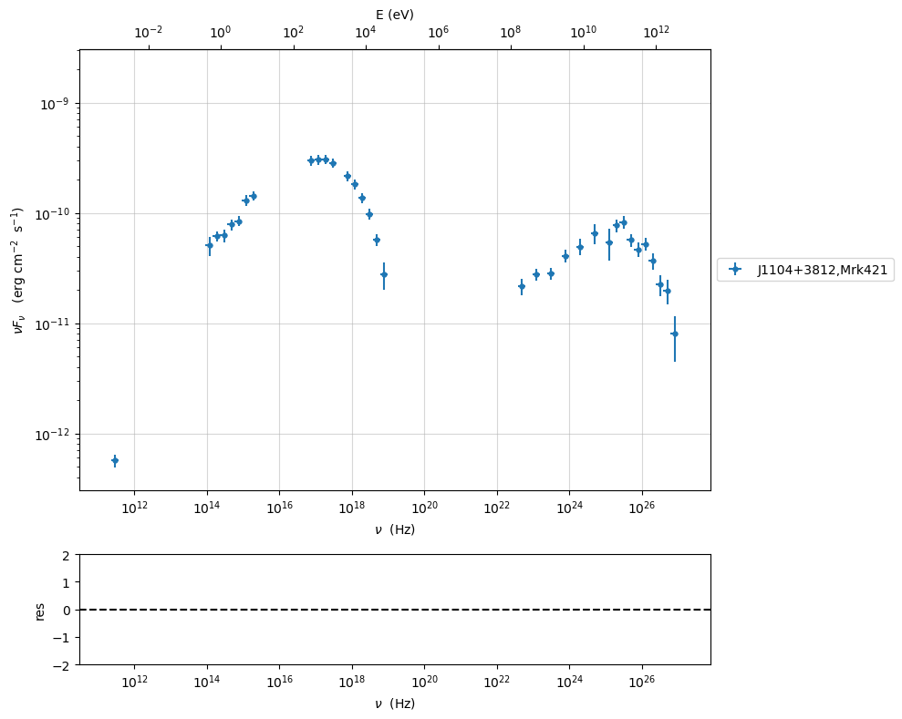
sed_data.save('Mrk_401.pkl')
phenomenological model constraining#
see the Phenomenological model constraining: application user guide for further information about phenomenological constraining
spectral indices#
from jetset.sed_shaper import SEDShape
my_shape=SEDShape(sed_data)
my_shape.eval_indices(minimizer='lsb',silent=True)
p=my_shape.plot_indices()
p.setlim(y_min=1E-15,y_max=5E-8)
================================================================================ * evaluating spectral indices for data * ================================================================================
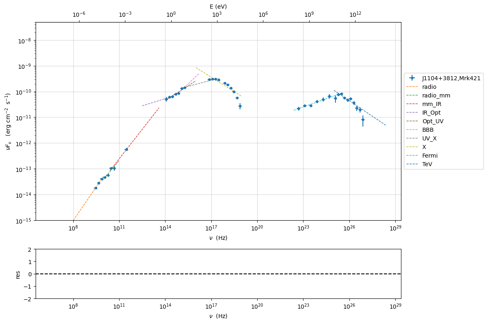
sed shaper#
mm,best_fit=my_shape.sync_fit(check_host_gal_template=False,
Ep_start=None,
minimizer='lsb',
silent=True,
fit_range=[10.,21.])
================================================================================ * Log-Polynomial fitting of the synchrotron component * ---> first blind fit run, fit range: [10.0, 21.0] ---> class: HSPTable length=4
| model name | name | val | bestfit val | err + | err - | start val | fit range min | fit range max | frozen |
|---|---|---|---|---|---|---|---|---|---|
| LogCubic | b | -1.563747e-01 | -1.563747e-01 | 5.975434e-03 | -- | -1.000000e+00 | -1.000000e+01 | 0.000000e+00 | False |
| LogCubic | c | -1.052802e-02 | -1.052802e-02 | 8.781942e-04 | -- | -1.000000e+00 | -1.000000e+01 | 1.000000e+01 | False |
| LogCubic | Ep | 1.675324e+01 | 1.675324e+01 | 2.396636e-02 | -- | 1.670206e+01 | 0.000000e+00 | 3.000000e+01 | False |
| LogCubic | Sp | -9.494365e+00 | -9.494365e+00 | 1.704982e-02 | -- | -1.000000e+01 | -3.000000e+01 | 0.000000e+00 | False |
---> sync nu_p=+1.675324e+01 (err=+2.396636e-02) nuFnu_p=-9.494365e+00 (err=+1.704982e-02) curv.=-1.563747e-01 (err=+5.975434e-03)
================================================================================
my_shape.IC_fit(fit_range=[23.,29.],minimizer='minuit',silent=True)
p=my_shape.plot_shape_fit()
p.setlim(y_min=1E-15,y_max=5E-8)
================================================================================ * Log-Polynomial fitting of the IC component * ---> fit range: [23.0, 29.0] ---> LogCubic fitTable length=4
| model name | name | val | bestfit val | err + | err - | start val | fit range min | fit range max | frozen |
|---|---|---|---|---|---|---|---|---|---|
| LogCubic | b | -2.274590e-01 | -2.274590e-01 | 3.262165e-02 | -- | -1.000000e+00 | -1.000000e+01 | 0.000000e+00 | False |
| LogCubic | c | -6.259967e-02 | -6.259967e-02 | 1.629407e-02 | -- | -1.000000e+00 | -1.000000e+01 | 1.000000e+01 | False |
| LogCubic | Ep | 2.527207e+01 | 2.527207e+01 | 8.149544e-02 | -- | 2.528644e+01 | 0.000000e+00 | 3.000000e+01 | False |
| LogCubic | Sp | -1.014119e+01 | -1.014119e+01 | 2.734754e-02 | -- | -1.000000e+01 | -3.000000e+01 | 0.000000e+00 | False |
---> IC nu_p=+2.527207e+01 (err=+8.149544e-02) nuFnu_p=-1.014119e+01 (err=+2.734754e-02) curv.=-2.274590e-01 (err=+3.262165e-02)
================================================================================
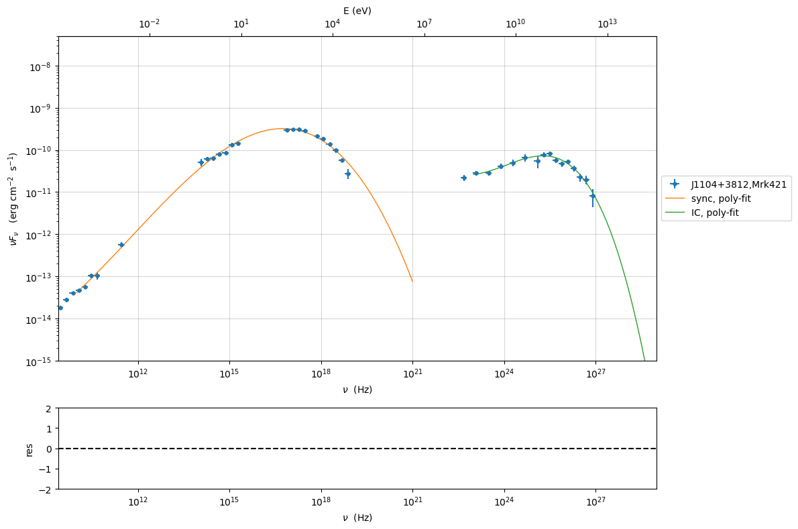
Model constraining#
In this step we are not fitting the model, we are just obtaining the
phenomenological pre_fit model, that will be fitted in using minuit
ore least-square bound, as shown below
from jetset.obs_constrain import ObsConstrain
from jetset.model_manager import FitModel
sed_obspar=ObsConstrain(beaming=25,
B_range=[0.001,0.1],
distr_e='lppl',
t_var_sec=3*86400,
nu_cut_IR=1E12,
SEDShape=my_shape)
prefit_jet=sed_obspar.constrain_SSC_model(electron_distribution_log_values=False,silent=True)
prefit_jet.save_model('prefit_jet.pkl')
================================================================================ * constrains parameters from observable *
/Users/orion/miniforge3/envs/py3.12/lib/python3.12/site-packages/jetset/obs_constrain.py:1114: RankWarning: Polyfit may be poorly conditioned
p=polyfit(nu_p_IC_model_log,B_grid_log,2)
| model name | name | par type | units | val | phys. bound. min | phys. bound. max | log | frozen |
|---|---|---|---|---|---|---|---|---|
| jet_leptonic | R | region_size | cm | 3.452668e+16 | 1.000000e+03 | 1.000000e+30 | False | False |
| jet_leptonic | R_H | region_position | cm | 1.000000e+17 | 0.000000e+00 | -- | False | True |
| jet_leptonic | B | magnetic_field | gauss | 5.050000e-02 | 0.000000e+00 | -- | False | False |
| jet_leptonic | NH_cold_to_rel_e | cold_p_to_rel_e_ratio | 1.000000e+00 | 0.000000e+00 | -- | False | True | |
| jet_leptonic | beam_obj | beaming | 2.500000e+01 | 1.000000e-04 | -- | False | False | |
| jet_leptonic | z_cosm | redshift | 3.080000e-02 | 0.000000e+00 | -- | False | False | |
| jet_leptonic | gmin | low-energy-cut-off | lorentz-factor* | 4.697542e+02 | 1.000000e+00 | 1.000000e+09 | False | False |
| jet_leptonic | gmax | high-energy-cut-off | lorentz-factor* | 1.300733e+06 | 1.000000e+00 | 1.000000e+15 | False | False |
| jet_leptonic | N | emitters_density | 1 / cm3 | 6.119093e-01 | 0.000000e+00 | -- | False | False |
| jet_leptonic | gamma0_log_parab | turn-over-energy | lorentz-factor* | 3.290961e+04 | 1.000000e+00 | 1.000000e+09 | False | False |
| jet_leptonic | s | LE_spectral_slope | 2.169388e+00 | -1.000000e+01 | 1.000000e+01 | False | False | |
| jet_leptonic | r | spectral_curvature | 7.818737e-01 | -1.500000e+01 | 1.500000e+01 | False | False |
================================================================================
prefit_jet.eval()
pl=prefit_jet.plot_model(sed_data=sed_data)
pl.add_residual_plot(prefit_jet,sed_data)
pl.setlim(y_min=1E-15,x_min=1E7,x_max=1E29)
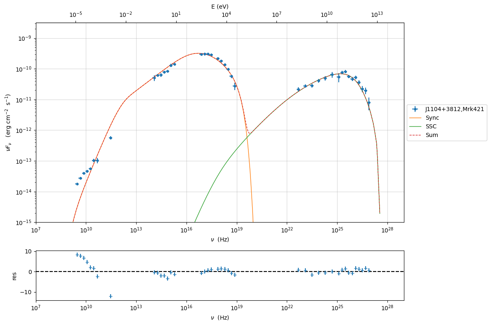
Model fitting procedure#
Note
Please, read the introduction and the caveat for the frequentist model fitting: to understand the frequentist fitting workflow
see the Composite Models and depending pars user guide for further information about the implementation of FitModel, in particular for parameter setting
Model fitting with LSB#
from jetset.minimizer import fit_SED,ModelMinimizer
from jetset.model_manager import FitModel
from jetset.jet_model import Jet
from jetset.jet_radio_component import RadioSpectrum
radio_spectrum=RadioSpectrum()
if you want to fit the prefit_model you can load the saved one (this
allows you to save time) ad pass it to the FitModel class
prefit_jet=Jet.load_model('prefit_jet.pkl')
fit_model=FitModel( jet=prefit_jet, name='SSC-best-fit-lsb',template=None)
fit_model.add_component(radio_spectrum)
OR use the one generated above
fit_model.show_model_components()
--------------------------------------------------------------------------------
Composite model description
--------------------------------------------------------------------------------
name: SSC-best-fit-lsb
type: composite_model
components models:
-model name: jet_leptonic model type: jet
-model name: radio_spectrum model type: radio_spectrum
--------------------------------------------------------------------------------
There are now two components: jet_leptonic and radio_spectrum
We now set the gamma grid size to 200, ad we set composite_expr,
anyhow, since we have only one component this step could be skipped
fit_model.jet_leptonic.set_gamma_grid_size(200)
fit_model.composite_expr='(jet_leptonic+radio_spectrum)'
fit_model.parameters
| model name | name | par type | units | val | phys. bound. min | phys. bound. max | log | frozen |
|---|---|---|---|---|---|---|---|---|
| jet_leptonic | gmin | low-energy-cut-off | lorentz-factor* | 4.697542e+02 | 1.000000e+00 | 1.000000e+09 | False | False |
| jet_leptonic | gmax | high-energy-cut-off | lorentz-factor* | 1.300733e+06 | 1.000000e+00 | 1.000000e+15 | False | False |
| jet_leptonic | N | emitters_density | 1 / cm3 | 6.119093e-01 | 0.000000e+00 | -- | False | False |
| jet_leptonic | gamma0_log_parab | turn-over-energy | lorentz-factor* | 3.290961e+04 | 1.000000e+00 | 1.000000e+09 | False | False |
| jet_leptonic | s | LE_spectral_slope | 2.169388e+00 | -1.000000e+01 | 1.000000e+01 | False | False | |
| jet_leptonic | r | spectral_curvature | 7.818737e-01 | -1.500000e+01 | 1.500000e+01 | False | False | |
| jet_leptonic | R | region_size | cm | 3.452668e+16 | 1.000000e+03 | 1.000000e+30 | False | False |
| jet_leptonic | R_H | region_position | cm | 1.000000e+17 | 0.000000e+00 | -- | False | True |
| jet_leptonic | B | magnetic_field | gauss | 5.050000e-02 | 0.000000e+00 | -- | False | False |
| jet_leptonic | NH_cold_to_rel_e | cold_p_to_rel_e_ratio | 1.000000e+00 | 0.000000e+00 | -- | False | True | |
| jet_leptonic | beam_obj | beaming | 2.500000e+01 | 1.000000e-04 | -- | False | False | |
| jet_leptonic | z_cosm | redshift | 3.080000e-02 | 0.000000e+00 | -- | False | False | |
| radio_spectrum | alpha_radio | spectral-slope | 0.000000e+00 | -1.000000e+01 | 1.000000e+01 | False | False | |
| radio_spectrum | nu_ssa | turn-over freq | Hz | 1.000000e+10 | 1.000000e+06 | 1.000000e+12 | False | False |
| radio_spectrum | nu_cut | Hz | 1.000000e+11 | 1.000000e+06 | 1.000000e+13 | False | False | |
| radio_spectrum | nuFnu_p | flux-const | cm2 erg / s | 1.000000e-13 | 1.000000e-30 | 1.000000e-05 | False | False |
None
Freezeing parameters and setting fit_range intervals#
These methods are alternative and equivalent ways to access a model component for setting parameters state and values or freezing
passing as first argument, of the method, the model component
nameand as second theparameter nameaccessing the model component member of the composite model class, and accessing the
parameterobject member
#a
fit_model.freeze('jet_leptonic','z_cosm')
#b
fit_model.jet_leptonic.parameters.R_H.frozen=True
fit_model.jet_leptonic.parameters.R.fit_range=[10**15.5,10**17.5]
fit_model.jet_leptonic.parameters.beam_obj.fit_range=[5., 50.]
fit_model.jet_leptonic.parameters.B.fit_range=[1E-3, 1]
fit_model.jet_leptonic.parameters.s.fit_range=[1, 3]
fit_model.jet_leptonic.parameters.r.fit_range=[.1, 2]
fit_model.jet_leptonic.parameters.gamma0_log_parab.fit_range=[1000, 1E6]
fit_model.jet_leptonic.parameters.gmin.fit_range=[2, 5E3]
fit_model.jet_leptonic.parameters.gmax.fit_range=[1E4, 1E7]
fit_model.radio_spectrum.parameters.nu_ssa.fit_range=[1E7, 5E10]
fit_model.radio_spectrum.parameters.nuFnu_p.fit_range=[1E-14, 1E-12]
Building the ModelMinimizer object#
model_minimizer=ModelMinimizer('minuit')
Since the pre-fit model was very close to the data, we degrade the model in order to provide a more robust benchmark to the fitter, but this is not required!!!
fit_model.jet_leptonic.parameters.N.val=1
fit_model.jet_leptonic.parameters.r.val=1.0
fit_model.jet_leptonic.parameters.beam_obj.val=20
fit_model.eval()
%matplotlib inline
fit_model.set_nu_grid(1E6,1E30,200)
fit_model.eval()
p2=fit_model.plot_model(sed_data=sed_data)
p2.setlim(y_min=1E-14,x_min=1E6,x_max=2E28)
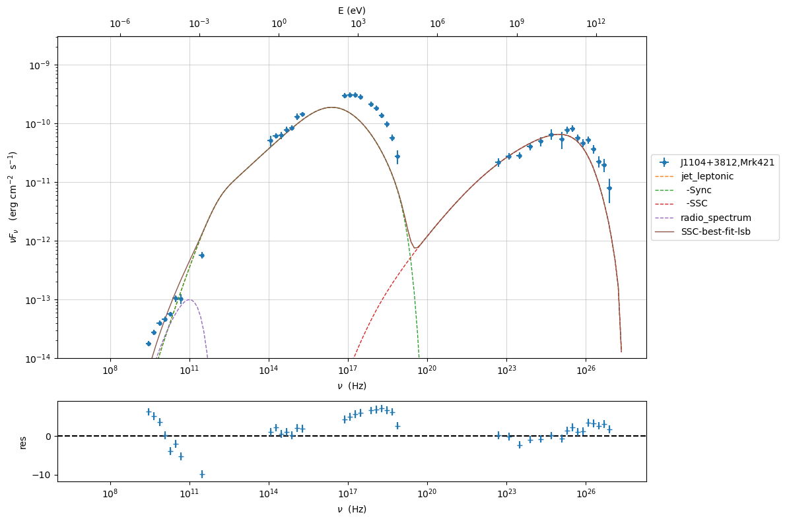
best_fit_res=model_minimizer.fit(fit_model,
sed_data,
1E7,
1E29,
fitname='SSC-best-fit-minuit',
repeat=1)
filtering data in fit range = [1.000000e+07,1.000000e+29] data length 41 ================================================================================ * start fit process * -----
0it [00:00, ?it/s]
- best chisq=2.36839e+01
-------------------------------------------------------------------------
Fit report
Model: SSC-best-fit-minuit
| model name | name | par type | units | val | phys. bound. min | phys. bound. max | log | frozen |
|---|---|---|---|---|---|---|---|---|
| jet_leptonic | gmin | low-energy-cut-off | lorentz-factor* | 8.616157e+02 | 1.000000e+00 | 1.000000e+09 | False | False |
| jet_leptonic | gmax | high-energy-cut-off | lorentz-factor* | 8.501547e+05 | 1.000000e+00 | 1.000000e+15 | False | False |
| jet_leptonic | N | emitters_density | 1 / cm3 | 4.045771e-01 | 0.000000e+00 | -- | False | False |
| jet_leptonic | gamma0_log_parab | turn-over-energy | lorentz-factor* | 3.530794e+04 | 1.000000e+00 | 1.000000e+09 | False | False |
| jet_leptonic | s | LE_spectral_slope | 2.197667e+00 | -1.000000e+01 | 1.000000e+01 | False | False | |
| jet_leptonic | r | spectral_curvature | 6.441815e-01 | -1.500000e+01 | 1.500000e+01 | False | False | |
| jet_leptonic | R | region_size | cm | 2.953724e+16 | 1.000000e+03 | 1.000000e+30 | False | False |
| jet_leptonic | R_H | region_position | cm | 1.000000e+17 | 0.000000e+00 | -- | False | True |
| jet_leptonic | B | magnetic_field | gauss | 4.843647e-02 | 0.000000e+00 | -- | False | False |
| jet_leptonic | NH_cold_to_rel_e | cold_p_to_rel_e_ratio | 1.000000e+00 | 0.000000e+00 | -- | False | True | |
| jet_leptonic | beam_obj | beaming | 2.591055e+01 | 1.000000e-04 | -- | False | False | |
| jet_leptonic | z_cosm | redshift | 3.080000e-02 | 0.000000e+00 | -- | False | True | |
| radio_spectrum | alpha_radio | spectral-slope | 7.952120e-01 | -1.000000e+01 | 1.000000e+01 | False | False | |
| radio_spectrum | nu_ssa | turn-over freq | Hz | 8.054550e+08 | 1.000000e+06 | 1.000000e+12 | False | False |
| radio_spectrum | nu_cut | Hz | 8.730824e+12 | 1.000000e+06 | 1.000000e+13 | False | False | |
| radio_spectrum | nuFnu_p | flux-const | cm2 erg / s | 7.239913e-14 | 1.000000e-30 | 1.000000e-05 | False | False |
converged=True
calls=9125
mesg=
| Migrad | |
|---|---|
| FCN = 23.68 | Nfcn = 9125 |
| EDM = 3.85e+03 (Goal: 0.0002) | time = 29.2 sec |
| INVALID Minimum | ABOVE EDM threshold (goal x 10) |
| SOME parameters at limit | Below call limit |
| Hesse ok | Covariance APPROXIMATE |
| Name | Value | Hesse Error | Minos Error- | Minos Error+ | Limit- | Limit+ | Fixed | |
|---|---|---|---|---|---|---|---|---|
| 0 | par_0 | 0.9e3 | 2.7e3 | 2 | 5E+03 | |||
| 1 | par_1 | 1e6 | 6e6 | 1E+04 | 1E+07 | |||
| 2 | par_2 | 0.4 | 0.8 | 0 | ||||
| 3 | par_3 | 0 | 0.7e6 | 1E+03 | 1E+06 | |||
| 4 | par_4 | 2.2 | 1.6 | 1 | 3 | |||
| 5 | par_5 | 0.6 | 1.2 | 0.1 | 2 | |||
| 6 | par_6 | 0.03e18 | 0.16e18 | 3.16E+15 | 3.16E+17 | |||
| 7 | par_7 | 0.0 | 0.6 | 0.001 | 1 | |||
| 8 | par_8 | 26 | 33 | 5 | 50 | |||
| 9 | par_9 | 1 | 8 | -10 | 10 | |||
| 10 | par_10 | 0.001e12 | 0.035e12 | 1E+07 | 5E+10 | |||
| 11 | par_11 | 8.7e12 | 2.8e12 | 1E+06 | 1E+13 | |||
| 12 | par_12 | 0.1e-12 | 0.6e-12 | 1E-14 | 1E-12 |
dof=28
chisq=23.683877, chisq/red=0.845853 null hypothesis sig=0.698107
best fit pars
| model name | name | val | bestfit val | err + | err - | start val | fit range min | fit range max | frozen |
|---|---|---|---|---|---|---|---|---|---|
| jet_leptonic | gmin | 8.616157e+02 | 8.616157e+02 | 2.672922e+03 | -- | 4.697542e+02 | 2.000000e+00 | 5.000000e+03 | False |
| jet_leptonic | gmax | 8.501547e+05 | 8.501547e+05 | 5.812264e+06 | -- | 1.300733e+06 | 1.000000e+04 | 1.000000e+07 | False |
| jet_leptonic | N | 4.045771e-01 | 4.045771e-01 | 8.043611e-01 | -- | 1.000000e+00 | 0.000000e+00 | -- | False |
| jet_leptonic | gamma0_log_parab | 3.530794e+04 | 3.530794e+04 | 6.535125e+05 | -- | 3.290961e+04 | 1.000000e+03 | 1.000000e+06 | False |
| jet_leptonic | s | 2.197667e+00 | 2.197667e+00 | 1.566722e+00 | -- | 2.169388e+00 | 1.000000e+00 | 3.000000e+00 | False |
| jet_leptonic | r | 6.441815e-01 | 6.441815e-01 | 1.161917e+00 | -- | 1.000000e+00 | 1.000000e-01 | 2.000000e+00 | False |
| jet_leptonic | R | 2.953724e+16 | 2.953724e+16 | 1.586960e+17 | -- | 3.452668e+16 | 3.162278e+15 | 3.162278e+17 | False |
| jet_leptonic | R_H | 1.000000e+17 | -- | -- | -- | 1.000000e+17 | 0.000000e+00 | -- | True |
| jet_leptonic | B | 4.843647e-02 | 4.843647e-02 | 5.803517e-01 | -- | 5.050000e-02 | 1.000000e-03 | 1.000000e+00 | False |
| jet_leptonic | NH_cold_to_rel_e | 1.000000e+00 | -- | -- | -- | 1.000000e+00 | 0.000000e+00 | -- | True |
| jet_leptonic | beam_obj | 2.591055e+01 | 2.591055e+01 | 3.292513e+01 | -- | 2.000000e+01 | 5.000000e+00 | 5.000000e+01 | False |
| jet_leptonic | z_cosm | 3.080000e-02 | -- | -- | -- | 3.080000e-02 | 0.000000e+00 | -- | True |
| radio_spectrum | alpha_radio | 7.952120e-01 | 7.952120e-01 | 7.848599e+00 | -- | 0.000000e+00 | -1.000000e+01 | 1.000000e+01 | False |
| radio_spectrum | nu_ssa | 8.054550e+08 | 8.054550e+08 | 3.481469e+10 | -- | 1.000000e+10 | 1.000000e+07 | 5.000000e+10 | False |
| radio_spectrum | nu_cut | 8.730824e+12 | 8.730824e+12 | 2.801092e+12 | -- | 1.000000e+11 | 1.000000e+06 | 1.000000e+13 | False |
| radio_spectrum | nuFnu_p | 7.239913e-14 | 7.239913e-14 | 6.043136e-13 | -- | 1.000000e-13 | 1.000000e-14 | 1.000000e-12 | False |
-------------------------------------------------------------------------
================================================================================
%matplotlib inline
fit_model.set_nu_grid(1E6,1E30,200)
fit_model.eval()
p2=fit_model.plot_model(sed_data=sed_data)
p2.setlim(y_min=1E-15,x_min=1E6,x_max=2E28)
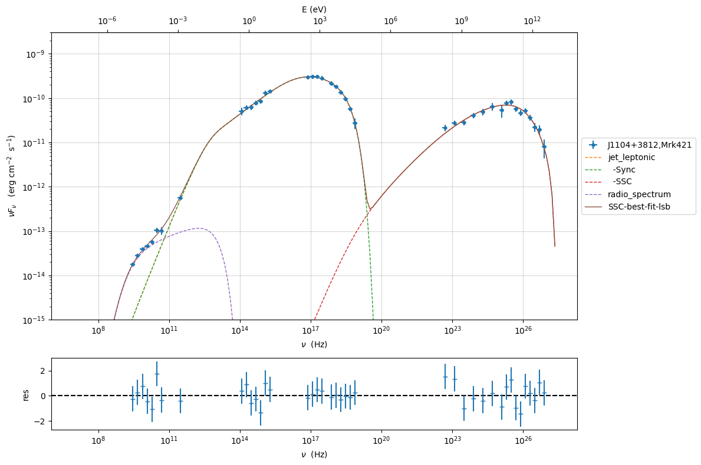
p=model_minimizer.plot_corr_matrix()
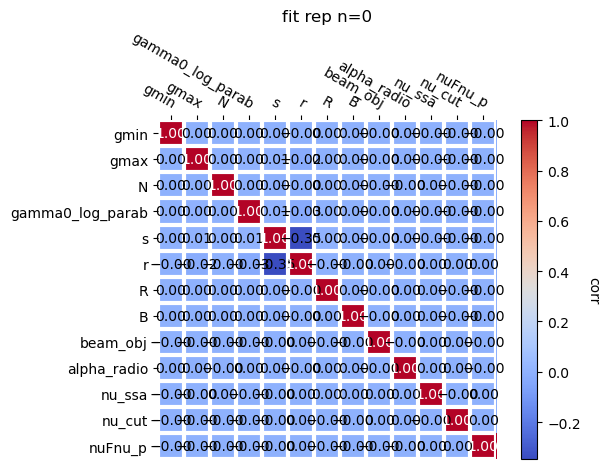
saving fit model, model minimizer#
We can save all the fit products to be used later.
best_fit_res.save_report('SSC-best-fit.pkl')
model_minimizer.save_model('model_minimizer.pkl')
fit_model.save_model('fit_model.pkl')
saving fit model, model minimizer#
best_fit.save_report('SSC-best-fit.pkl')
model_minimizer.save_model('model_minimizer.pkl')
fit_model.save_model('fit_model.pkl')
You can obtain profile and contours, but this is typically time consuming. In any case, better results can be achieved using the MCMC approach (discussed in next section). For further information regarding minuit please refer to https://iminuit.readthedocs.io
#migrad profile
#access the data
profile_migrad=model_minimizer_minuit.minimizer.mnprofile('s')
#make the plot(no need to run the previous command)
profile_plot_migrad=model_minimizer_minuit.minimizer.draw_mnprofile('s')
#migrad contour
#access the data
contour_migrad=model_minimizer_minuit.minimizer.contour('beam_obj','B')
#make the plot(no need to run the previous command)
contour_plot_migrad=model_minimizer_minuit.minimizer.draw_contour('beam_obj','B')
you can use also minos contour and profile, in this case the computational time is even longer:
profile_migrad=model_minimizer_minuit.minimizer.mnprofile('s')
profile_plot_migrad=model_minimizer_minuit.minimizer.draw_mnprofile('s')
contour_migrad=model_minimizer_minuit.minimizer.mncontour('r','s')
contour_plot_migrad=model_minimizer_minuit.minimizer.draw_mncontour('r','s')
MCMC sampling#
Note
Please, read the introduction and the caveat for the Bayesian model fitting to understand the MCMC sampler workflow.
creating and setting the sampler#
from jetset.mcmc import McmcSampler
from jetset.minimizer import ModelMinimizer
model_minimizer = ModelMinimizer.load_model('model_minimizer.pkl')
mcmc=McmcSampler(model_minimizer)
#Labels for model components
#jet_leptonic
labels=['N','B','beam_obj','s','gamma0_log_parab','R']
model_name='jet_leptonic'
use_labels_dict={model_name:labels}
#radio_spectrum
use_labels_dict['radio_spectrum']=['alpha_radio']
mcmc.set_labels(use_labels_dict=use_labels_dict)
mcmc.set_bounds(bound=5.0,bound_rel=True)
par: N best fit value: 0.4045770743289627 mcmc bounds: [0, np.float64(2.4274624459737764)]
par: B best fit value: 0.048436466272453474 mcmc bounds: [0.001, np.float64(0.2906187976347208)]
par: beam_obj best fit value: 25.91054859843395 mcmc bounds: [5.0, 50.0]
par: s best fit value: 2.1976674346064984 mcmc bounds: [1, 3]
par: gamma0_log_parab best fit value: 35307.93557240542 mcmc bounds: [1000, np.float64(211847.61343443248)]
par: R best fit value: 2.9537239698864364e+16 mcmc bounds: [3162277660168379.5, np.float64(1.7722343819318618e+17)]
par: alpha_radio best fit value: 0.7952119649556244 mcmc bounds: [np.float64(-3.1808478598224976), np.float64(4.771271789733746)]
mcmc.par_table
| idx | model name | name | current val | mcmc best fit val | quantile 0.16 | quantile 0.50 | quantile 0.84 | val min | val max | mcmc bound min | mcmc bound max | units | plot label |
|---|---|---|---|---|---|---|---|---|---|---|---|---|---|
| int64 | str14 | str16 | float64 | object | object | object | object | float64 | object | float64 | float64 | str15 | str16 |
| 0 | jet_leptonic | N | 0.4045770743289627 | None | None | None | None | 0.0 | None | 0.0 | 2.4274624459737764 | 1 / cm3 | N |
| 1 | jet_leptonic | B | 0.048436466272453474 | None | None | None | None | 0.0 | None | 0.001 | 0.2906187976347208 | gauss | B |
| 2 | jet_leptonic | beam_obj | 25.91054859843395 | None | None | None | None | 0.0001 | None | 5.0 | 50.0 | beam_obj | |
| 3 | jet_leptonic | s | 2.1976674346064984 | None | None | None | None | -10.0 | 10 | 1.0 | 3.0 | s | |
| 4 | jet_leptonic | gamma0_log_parab | 35307.93557240542 | None | None | None | None | 1.0 | 1000000000.0 | 1000.0 | 211847.61343443248 | lorentz-factor* | gamma0_log_parab |
| 5 | jet_leptonic | R | 2.9537239698864364e+16 | None | None | None | None | 1000.0 | 1e+30 | 3162277660168379.5 | 1.7722343819318618e+17 | cm | R |
| 6 | radio_spectrum | alpha_radio | 0.7952119649556244 | None | None | None | None | -10.0 | 10.0 | -3.1808478598224976 | 4.771271789733746 | alpha_radio |
mcmc.run_sampler(nwalkers=30, burnin=50,steps=500,progress='notebook')
mcmc run starting
0%| | 0/500 [00:00<?, ?it/s]
mcmc run done, with 1 threads took 60.88 seconds
----------------------------
MCMC best fit solution
N: 0.41102440963442893
B: 0.04905247181242125
beam_obj: 25.56123283475354
s: 2.207331808427159
gamma0_log_parab: 36239.26768013641
R: 2.9928266521976584e+16
alpha_radio: 0.7919472938121327
----------------------------
Showing the MCMC parameters. Now MCMC bestfit values are updated to the best-fit MCMC solution
mcmc.par_table
| idx | model name | name | current val | mcmc best fit val | quantile 0.16 | quantile 0.50 | quantile 0.84 | val min | val max | mcmc bound min | mcmc bound max | units | plot label |
|---|---|---|---|---|---|---|---|---|---|---|---|---|---|
| int64 | str14 | str16 | float64 | float64 | float64 | float64 | float64 | float64 | object | float64 | float64 | str15 | str16 |
| 0 | jet_leptonic | N | 0.41102440963442893 | 0.41102440963442893 | 0.34415456966507507 | 0.4058138002691175 | 0.46997414356288375 | 0.0 | None | 0.0 | 2.4274624459737764 | 1 / cm3 | N |
| 1 | jet_leptonic | B | 0.04905247181242125 | 0.04905247181242125 | 0.04341225125120299 | 0.04893650103160777 | 0.05522103183442957 | 0.0 | None | 0.001 | 0.2906187976347208 | gauss | B |
| 2 | jet_leptonic | beam_obj | 25.56123283475354 | 25.56123283475354 | 23.034510400184683 | 25.535565479822836 | 28.125593999318227 | 0.0001 | None | 5.0 | 50.0 | beam_obj | |
| 3 | jet_leptonic | s | 2.207331808427159 | 2.207331808427159 | 2.1567385086527 | 2.197406113284236 | 2.2452415948087157 | -10.0 | 10 | 1.0 | 3.0 | s | |
| 4 | jet_leptonic | gamma0_log_parab | 36239.26768013641 | 36239.26768013641 | 31407.044724966905 | 35530.71214803311 | 41561.99322241084 | 1.0 | 1000000000.0 | 1000.0 | 211847.61343443248 | lorentz-factor* | gamma0_log_parab |
| 5 | jet_leptonic | R | 2.9928266521976584e+16 | 2.9928266521976584e+16 | 2.6718119234541404e+16 | 2.982740249597726e+16 | 3.3686369204738612e+16 | 1000.0 | 1e+30 | 3162277660168379.5 | 1.7722343819318618e+17 | cm | R |
| 6 | radio_spectrum | alpha_radio | 0.7919472938121327 | 0.7919472938121327 | 0.7882926188116747 | 0.7961170914408362 | 0.8024416223796527 | -10.0 | 10.0 | -3.1808478598224976 | 4.771271789733746 | alpha_radio |
plotting the posterior corner plot#
To have a better rendering on the scatter plot, we redefine the plot labels
mcmc.set_plot_label('N',r'$N$')
mcmc.set_plot_label('B',r'$B$')
mcmc.set_plot_label('beam_obj',r'$\delta$')
mcmc.set_plot_label('s',r'$s$')
mcmc.set_plot_label('gamma0_log_parab',r'$\gamma_0$')
mcmc.set_plot_label('alpha_radio',r'$\alpha_{\rm Radio}$')
the code below lets you tuning the output
mpl.rcParams[‘figure.dpi’] if you increase it you get a better definition
title_fmt=“.2E” this is the format for python, 2 significant digits, scientific notation
title_kwargs=dict(fontsize=12) you can change the fontsize
import matplotlib as mpl
mpl.rcParams['figure.dpi'] = 80
f=mcmc.corner_plot(quantiles=(0.16, 0.5, 0.84),title_kwargs=dict(fontsize=12),title_fmt=".2E",use_math_text=True)
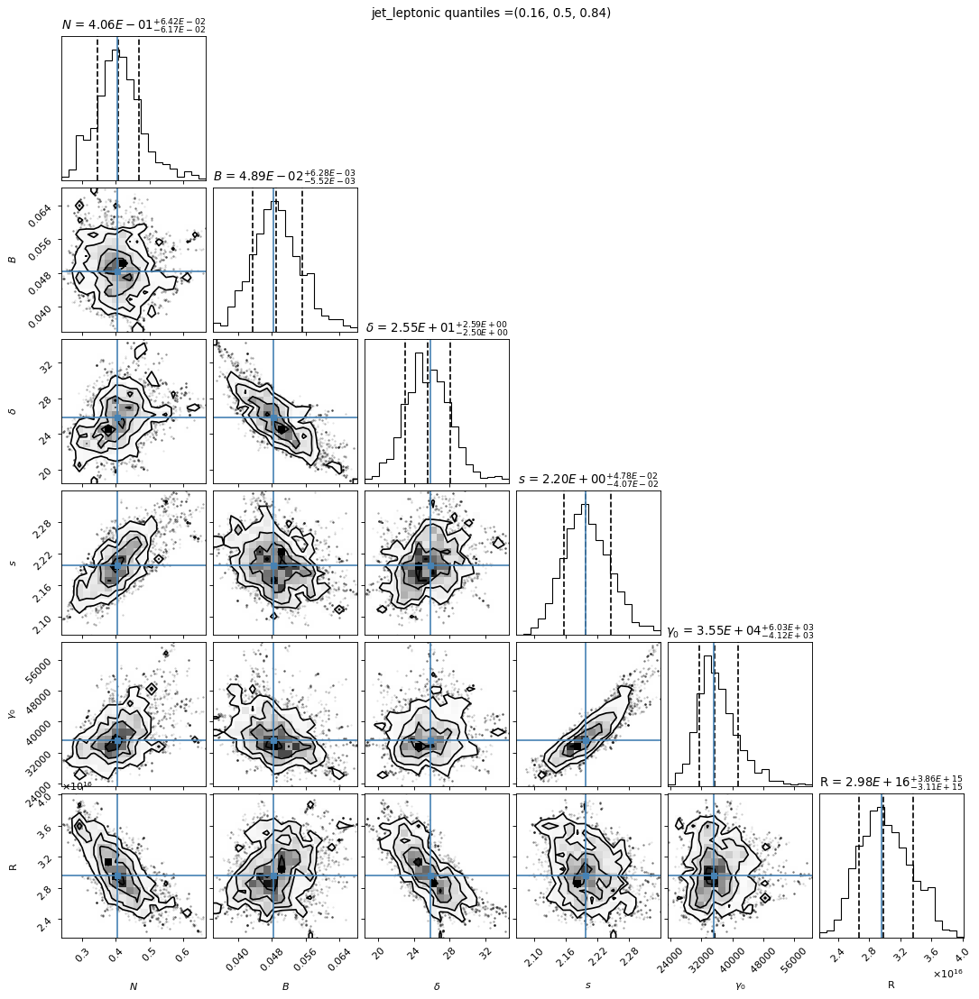
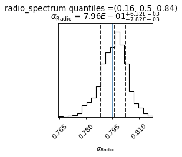
print(mcmc.acceptance_fraction)
0.34286666666666665
plotting the model#
To plot the sampled model range against the input best-fit model
mpl.rcParams['figure.dpi'] = 80
p=mcmc.plot_model(sed_data=sed_data,fit_range=[1E7,1E29],size=100)
p.setlim(y_min=1E-14,x_min=1E6,x_max=2E28)
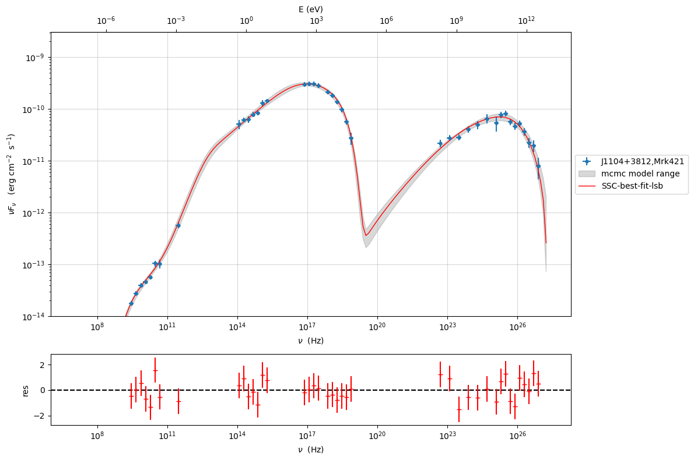
To plot the sampled model range,providing quantiles, against the input best-fit model, providing quantiles
mpl.rcParams['figure.dpi'] = 80
p=mcmc.plot_model(sed_data=sed_data,fit_range=[1E7, 2E29],size=100,quantiles=[0.05,0.95])
p.setlim(y_min=1E-14,x_min=1E6,x_max=2E28)
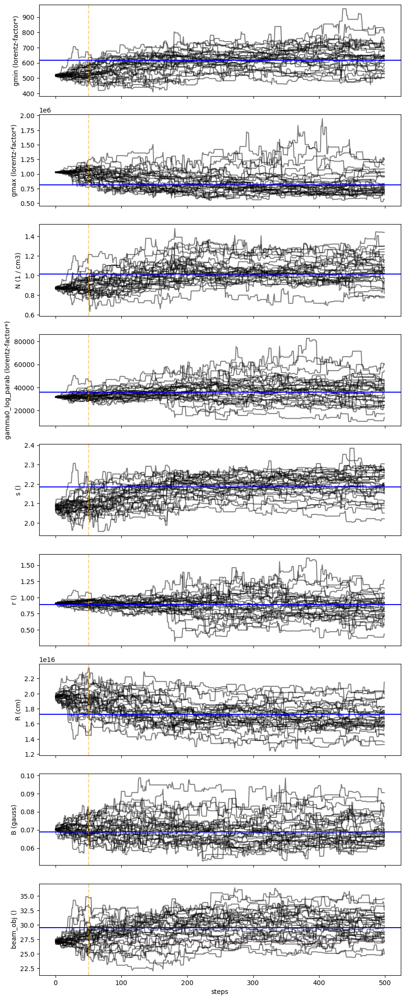
To plot the sampled model range,providing quantiles, against the mcmc
model at 0.5 quantile (plot_mcmc_best_fit_model==True provides the
0.5 quantile sampled model)
mpl.rcParams['figure.dpi'] = 100
p=mcmc.plot_model(sed_data=sed_data,fit_range=[1E7, 1E29],size=100,quantiles=[0.05,0.95], plot_mcmc_best_fit_model=True)
p.setlim(y_min=1E-14,x_min=1E6,x_max=2E28)
----------------------------
MCMC best fit solution
N: 0.41102440963442893
B: 0.04905247181242125
beam_obj: 25.56123283475354
s: 2.207331808427159
gamma0_log_parab: 36239.26768013641
R: 2.9928266521976584e+16
alpha_radio: 0.7919472938121327
----------------------------
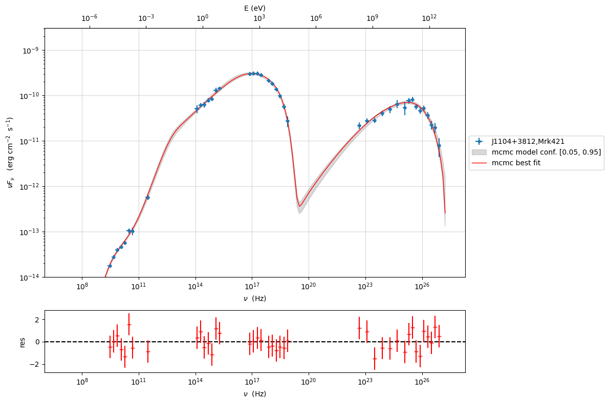
plotting chains and individual posteriors#
mpl.rcParams['figure.dpi'] = 80
f=mcmc.plot_chain(par_name='s',log_plot=False)
plt.tight_layout()
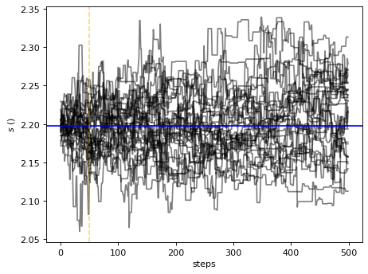
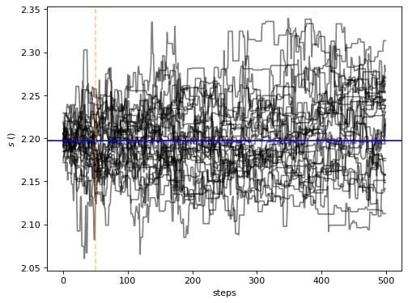
mpl.rcParams['figure.dpi'] = 80
f=mcmc.plot_chain(log_plot=False)
plt.tight_layout()
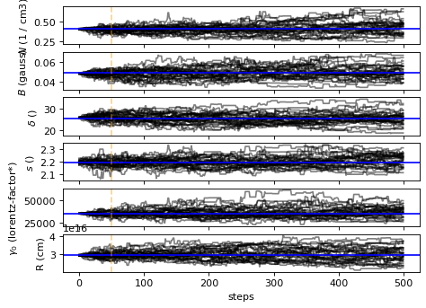
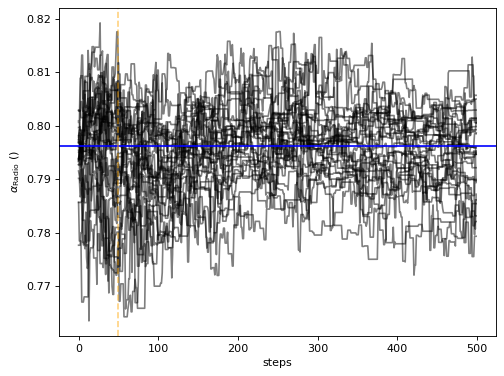
f=mcmc.plot_par('beam_obj',figsize=(8,6))
mpl.rcParams['figure.dpi'] = 80

mpl.rcParams['figure.dpi'] = 80
f=mcmc.plot_par('gamma0_log_parab',log_plot=True,figsize=(8,6))
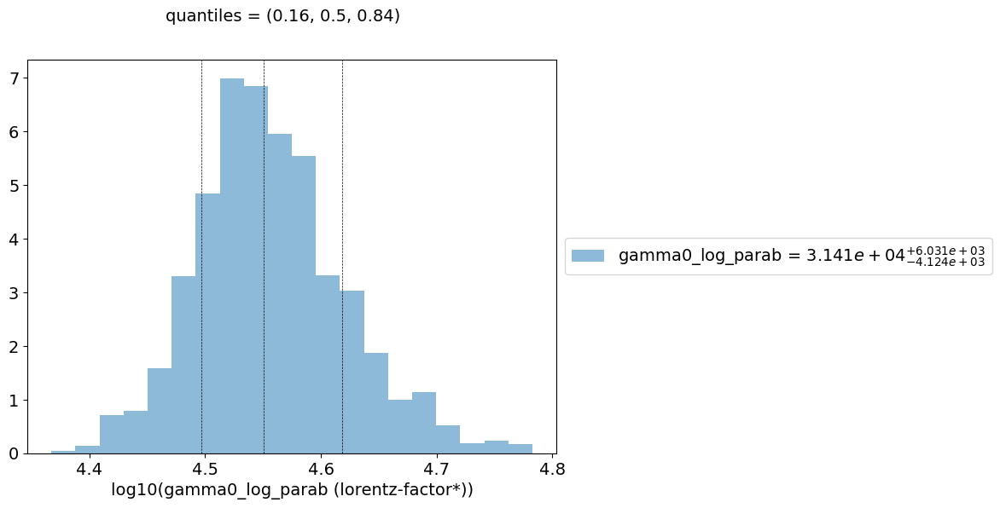
Save and reuse MCMC#
mcmc.save('mcmc_sampler.pkl')
from jetset.mcmc import McmcSampler
from jetset.data_loader import ObsData
from jetset.plot_sedfit import PlotSED
from jetset.test_data_helper import test_SEDs
sed_data=ObsData.load('Mrk_401.pkl')
ms=McmcSampler.load('mcmc_sampler.pkl')
import matplotlib as mpl
ms.model.name
'SSC-best-fit-lsb'
mpl.rcParams['figure.dpi'] = 80
p=ms.plot_model(sed_data=sed_data,fit_range=[1E7, 1E29],size=100)
p.setlim(y_min=1E-14,x_min=1E6,x_max=2E28)
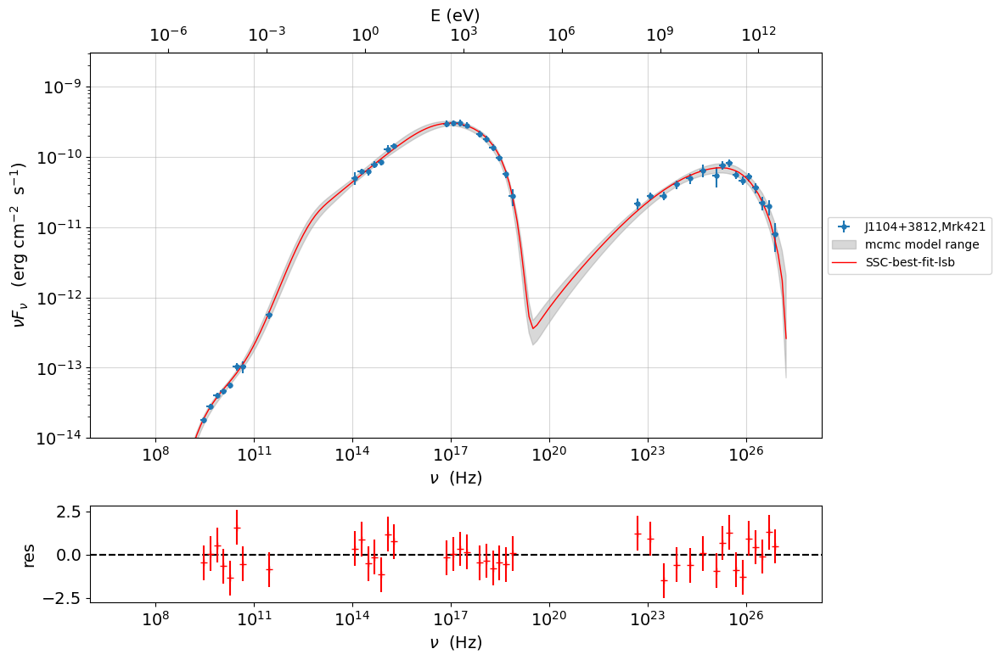
mpl.rcParams['figure.dpi'] = 80
p=ms.plot_model(sed_data=sed_data,fit_range=[1E7, 1E29],size=100,quantiles=[0.05,0.95])
p.setlim(y_min=1E-14,x_min=1E6,x_max=2E28)
mpl.rcParams['figure.dpi'] = 80
p=ms.plot_model(sed_data=sed_data,fit_range=[1E7, 1E29],size=100,quantiles=[0.05,0.95],plot_mcmc_best_fit_model=True)
p.setlim(y_min=1E-14,x_min=1E6,x_max=2E28)
----------------------------
MCMC best fit solution
N: 0.41102440963442893
B: 0.04905247181242125
beam_obj: 25.56123283475354
s: 2.207331808427159
gamma0_log_parab: 36239.26768013641
R: 2.9928266521976584e+16
alpha_radio: 0.7919472938121327
----------------------------
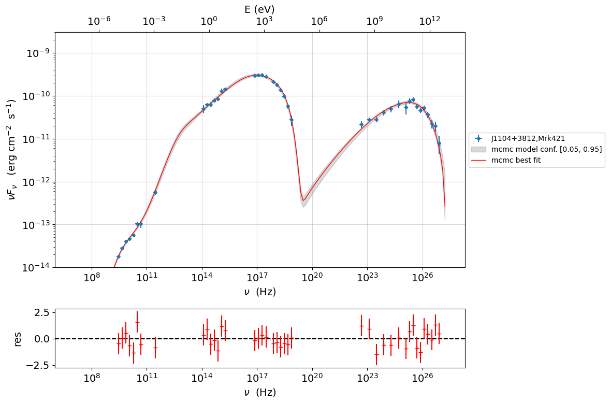
mpl.rcParams['figure.dpi'] = 80
f=ms.corner_plot(quantiles=(0.16, 0.5, 0.84),title_kwargs=dict(fontsize=12),title_fmt=".2E",use_math_text=True)
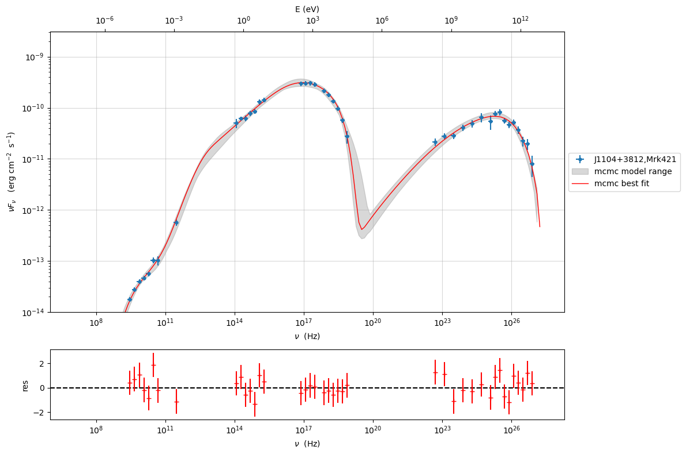
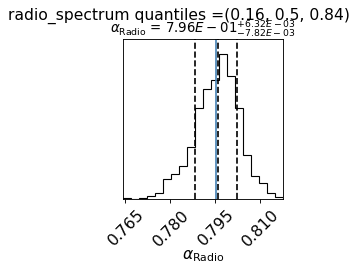
mpl.rcParams['figure.dpi'] = 80
f=ms.plot_par('beam_obj',log_plot=False,figsize=(8,6))
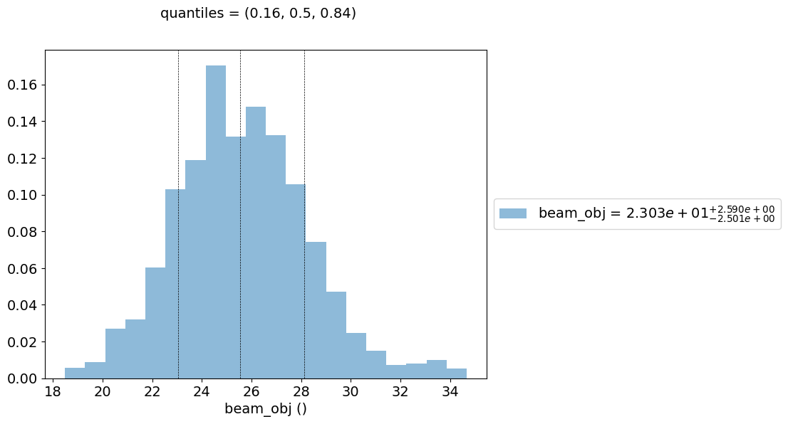
f=ms.plot_par('B',log_plot=True,figsize=(8,6))
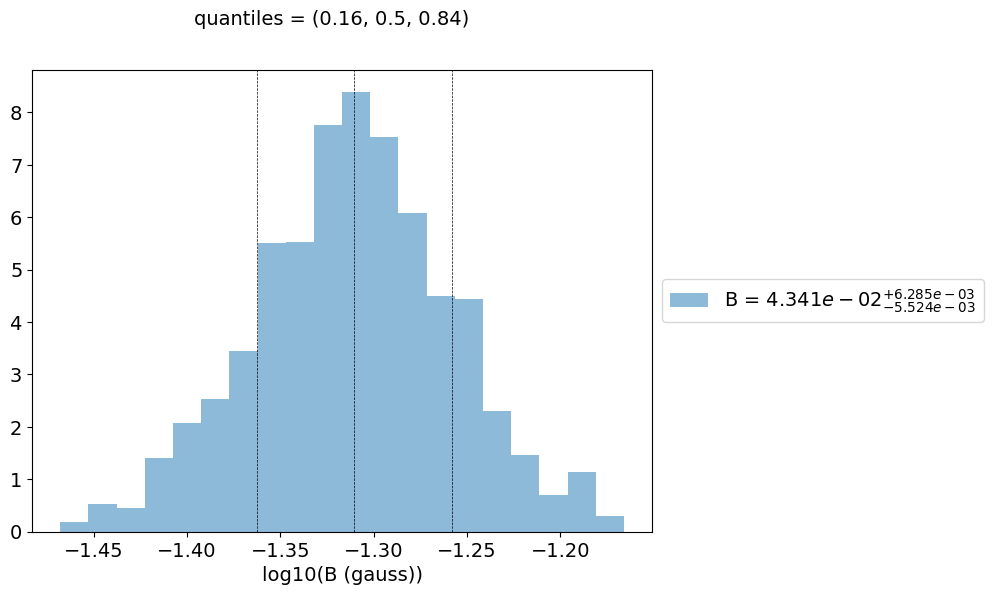
mpl.rcParams['figure.dpi'] = 80
f=ms.plot_chain(par_name='s',log_plot=False)
plt.tight_layout()
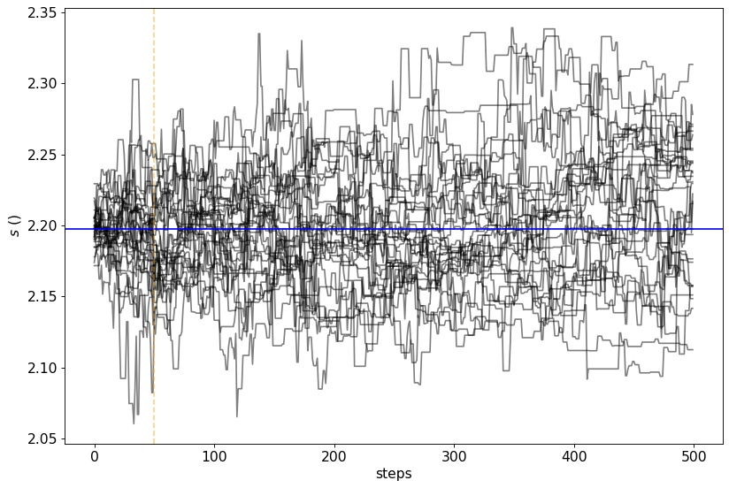
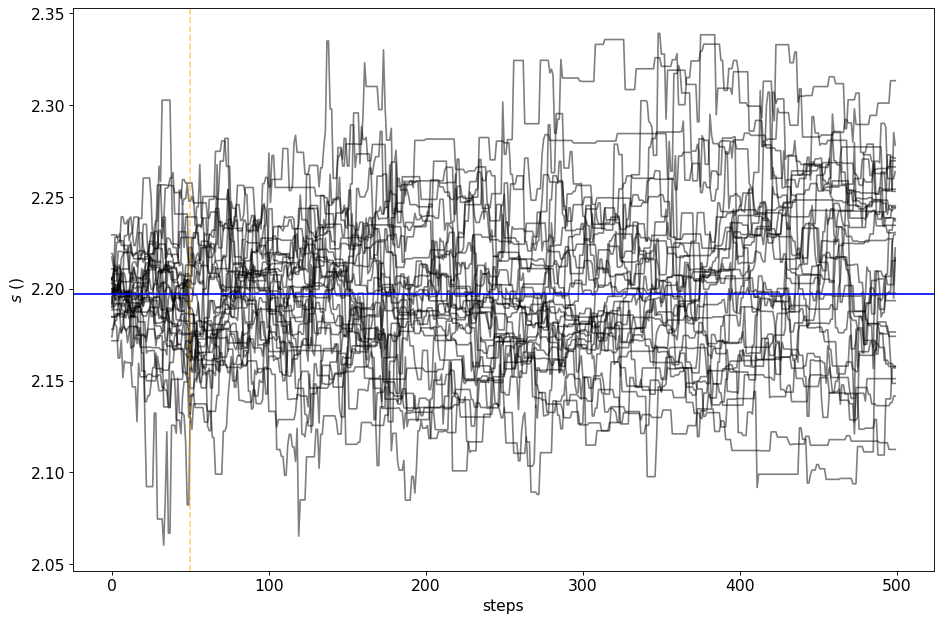
f=ms.plot_chain(log_plot=False)
plt.tight_layout()
mpl.rcParams['figure.dpi'] = 80
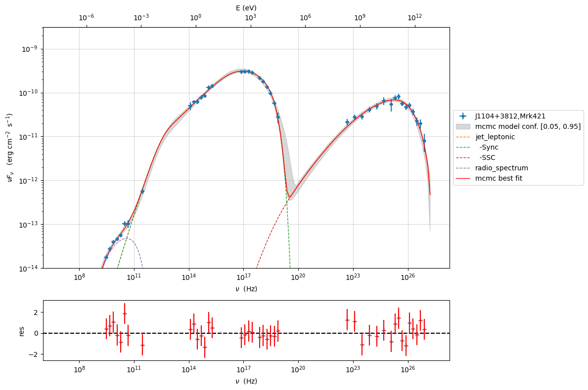
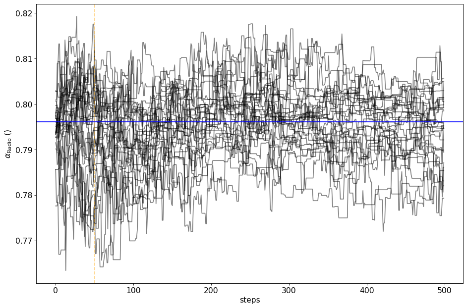